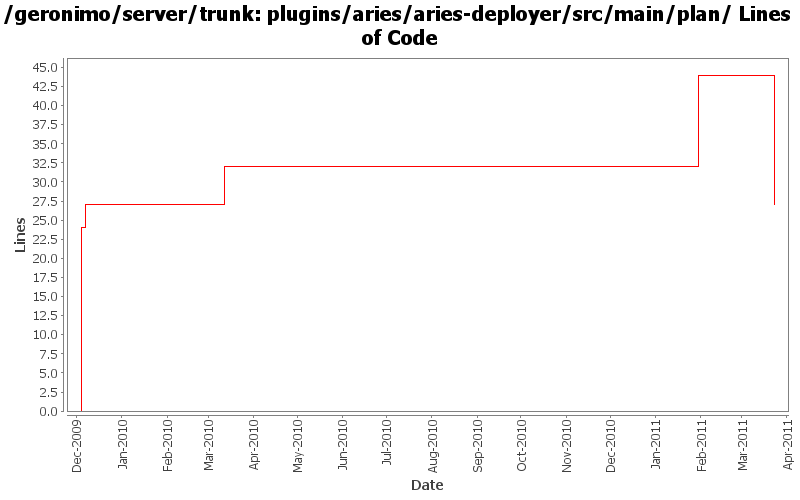

[root]/plugins/aries/aries-deployer/src/main/plan

| Author | Changes | Lines of Code | Lines per Change |
|---|---|---|---|
| Totals | 6 (100.0%) | 48 (100.0%) | 8.0 |
| gawor | 4 (66.7%) | 36 (75.0%) | 9.0 |
| xuhaihong | 1 (16.7%) | 12 (25.0%) | 12.0 |
| rwonly | 1 (16.7%) | 0 (0.0%) | 0.0 |
refact geronimo aries plugin structure
0 lines of code changed in 1 file:
GERONIMO-5797 Add defaultEnvironment support for eba config builder
12 lines of code changed in 1 file:
GERONIMO-4971: Much improved Aries application support along with Karaf shell commands for installing/uninstalling/starting/stopping/listing applications
8 lines of code changed in 1 file:
GERONIMO-4971: install application bundles into the repository
3 lines of code changed in 1 file:
GERONIMO-4971: switch to ConfigurationBuilder instead of ModuleBuilder
1 lines of code changed in 1 file:
GERONIMO-4971: basic structure for deployer for aries applications. The deployer communicates with Aries' ApplicationMetadataManager service to parse the application manifest
24 lines of code changed in 1 file: